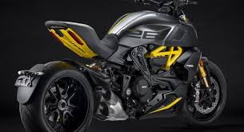
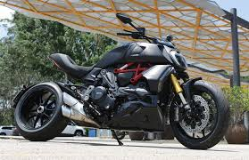

Ducati Diavel 1260s
| Marca |
Modelo |
Ano |
Preço |
Oleo |
| Ducati |
Diavel 1260s |
2019-2023 |
R$90.969,00 |
SAE 15W-50 |
- Curiosidade 1: Ela nasceu como a segunda geração da Diavel, mantendo a proposta de misturar maxi naked com muscle cruiser.
- Curiosidade 2: A moto ficou famosa pelo pneu traseiro de 240 mm, um dos elementos mais marcantes do visual e da identidade dela.
- Curiosidade 3: A Diavel 1260 ganhou prêmios importantes de design, incluindo o Red Dot Award 2019: Best of the Best e também o Good Design Award.
- Curiosidade 4: Torque: 13,16 kgf.m a 7500 rpm

